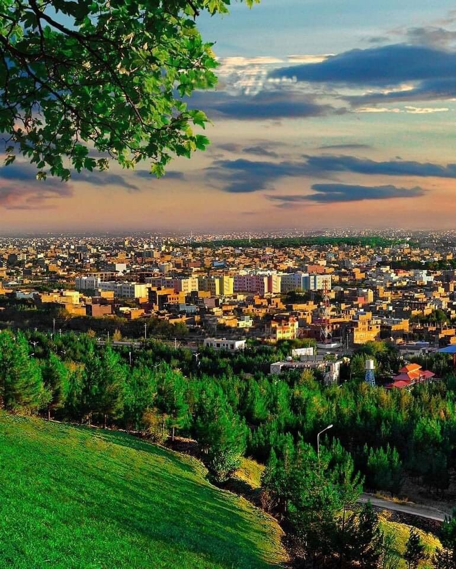

Herat is one of Afghanistan's oldest and most historically significant cities, located in the western part of the country near the Iranian border. It has long been a center of culture, commerce, and political power. Throughout its history, Herat has been shaped by various empires, including the Persian, Mongol, and Timurid dynasties, each leaving a lasting impact on the city's architecture, culture, and identity.
A Rich Cultural and Historical Legacy Herat’s strategic location along ancient trade routes has made it a crossroads of Central Asian, Persian, and South Asian cultures for centuries. The city flourished as a major hub for art, science, and literature during the Timurid period in the 15th century, under rulers like Shah Rukh and the renowned architect and artist, Baha-ud-Din Qubadi. During this time, Herat became a cultural beacon, with impressive mosques, palaces, and the establishment of intellectual institutions.
Iconic Landmarks and Architecture: Herat is known for its stunning Islamic architecture. The city’s landmarks, such as the Herat Citadel (also known as the Arg), the Friday Mosque (Masjid Jami), and the Mausoleum of Khwaja Abdullah Ansari, stand as testaments to Herat's artistic and architectural achievements. The intricate tilework, domed roofs, and grand courtyards reflect the city’s golden age under the Timurids and its ongoing cultural importance.
Challenges and Resilience Herat, like much of Afghanistan, has faced political instability, conflict, and economic challenges. Yet, despite the turbulent times, Herat's people continue to preserve their cultural heritage, maintaining a sense of pride in the city’s history and resilience. The city has also seen ongoing efforts in rebuilding its infrastructure and promoting education, commerce, and the arts.
|  |
The Beauty of Herat Herat, a city of timeless beauty and cultural richness, is a place where history and nature come together in perfect harmony. Its wide-open landscapes, surrounded by distant mountains, create a breathtaking view that leaves a lasting impression. The soft golden light of sunrise and sunset bathes the city in warmth, giving it a peaceful and poetic atmosphere. Herat’s beauty changes with the seasons, each offering its own charm. In spring, a place where history and nature come together in perfect harmony. Its wide-open landscapes, the land blooms with fresh greenery and colorful flowers, filling the air with the fragrance of new life. Winter, with its quiet snowfall, adds a layer of softness and stillness to the city’s natural beauty. Beyond its landscapes, the soul of Herat shines through its people. Known for their kindness, hospitality, and strong cultural traditions, they bring life and warmth to the city. The harmony between the beauty of the land and the spirit of its people makes Herat a truly special place, full of charm, peace, and inspiration. |